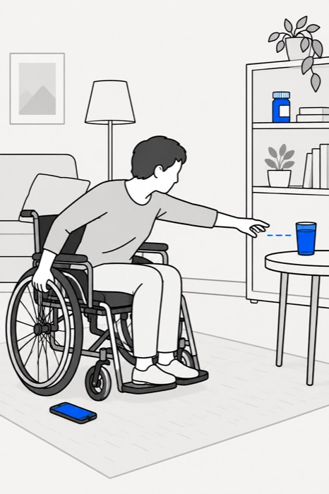
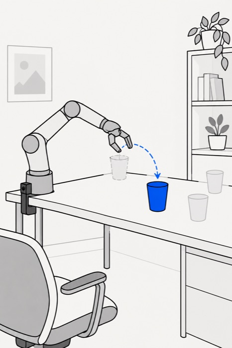
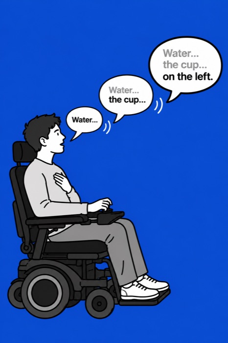
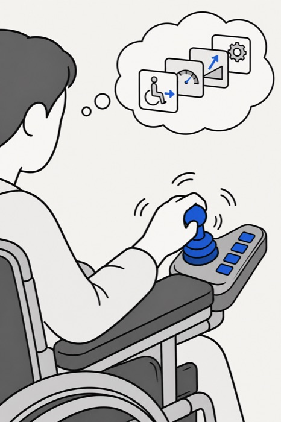

Everyday objects, just out of reach
A cup, a phone or medication can sit right beside the wheelchair and still be impossible to pick up alone. Five things make these moments hard, and limit how well today's assistive arms help.



